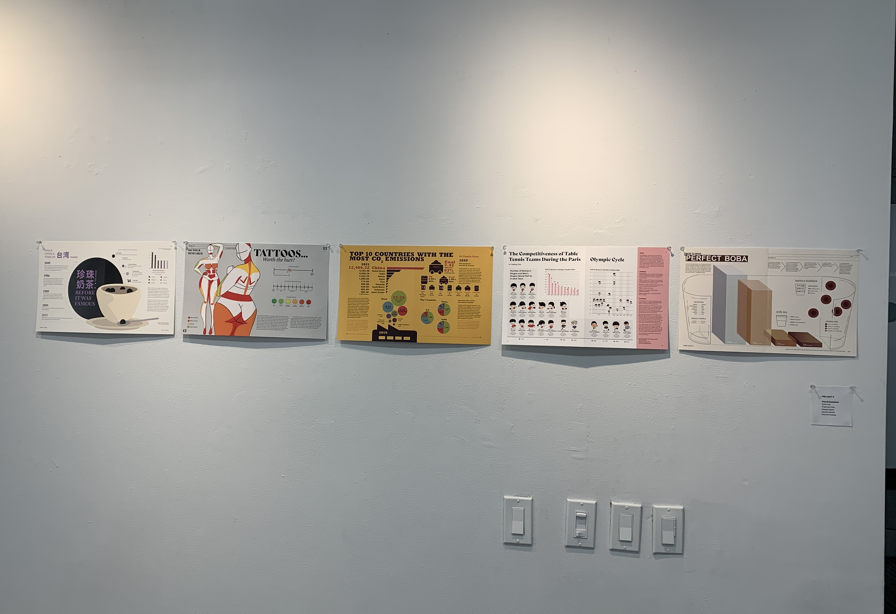
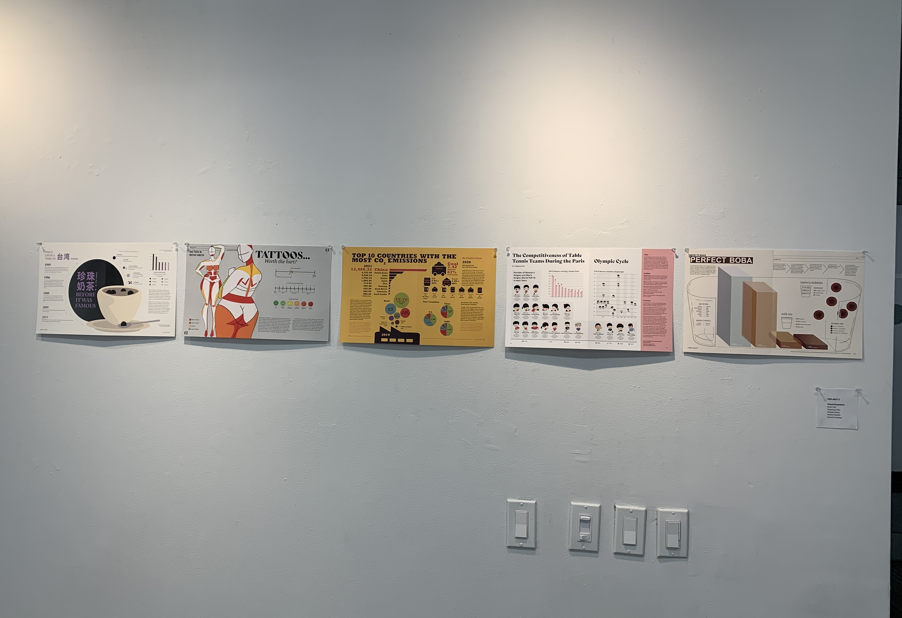

Visual Explainer
 

Visual Explainer synthesizes written information into visual form that essentially communicates the message both, through the written and the visual.
I used the following tools and software to create this piece of work:
— Adobe InDesign
— Adobe Illustrator
— Lots of credible research!!
I did this project in my second year. Most of the projects I had done until this point were pretty abstract and didn't really have set guidelines but this one did. It taught me that it is possible to be creative even within bounds and sometimes those bounds don't necessarily mean that you are bound. I chose to visually represent a tattoo pain index as accurately as possible while collecting information from credible resources and this was the result! All figures and illustrations are hand-drawn.